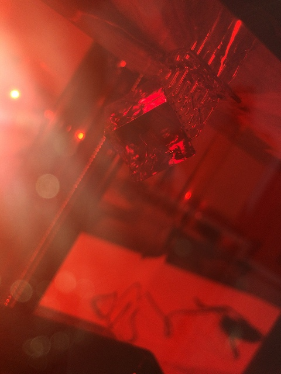
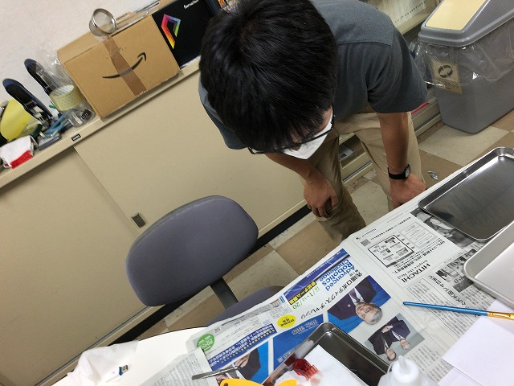

M2M4先輩がどうせここまで来たなら光造形3Dプリンタもやろう！ということで1台導入しました。いろいろ条件出しが大変でしたが、全ての地雷を踏み抜いて後進に道を作っていきます。
また、、、
送り速度が速すぎた
今度こそ
印刷中
なんか
出来てる
完了
その頃締め切り原稿仕上げてました
さて
サンプルできた
どれどれ
見物人達
できたら
洗う工程
よし
そっと取り出す
積層痕がキレイ

乾かして
磨けばいけそう
他も作ってみました
| ・ 光造形3Dプリンタ (R02.08.24) | |||
M2M4先輩がどうせここまで来たなら光造形3Dプリンタもやろう！ということで1台導入しました。いろいろ条件出しが大変でしたが、全ての地雷を踏み抜いて後進に道を作っていきます。 |
|||
|
また、、、 |
送り速度が速すぎた | ||
|
今度こそ |
印刷中 | ||
|
なんか |

出来てる | ||
|
完了 |
その頃締め切り原稿仕上げてました | ||
|
さて |
サンプルできた | ||
|

どれどれ |
見物人達 | ||
|
できたら |
洗う工程 | ||
|
よし |
そっと取り出す | ||
|
積層痕がキレイ |
乾かして | ||
|
磨けばいけそう |
他も作ってみました | ||